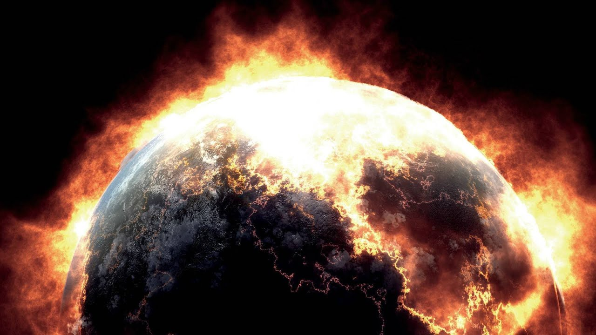

Why This Matters
Our planet is facing an environmental crisis driven by human activity. From the release of greenhouse gases that trap heat in the atmosphere, to the destruction of forests and unsustainable farming practices, our actions are accelerating climate change at an alarming rate.
This matters because climate change affects everyone — rising temperatures lead to more extreme weather events, rising sea levels, food insecurity, and the loss of biodiversity. Communities around the world, especially the most vulnerable, are already experiencing the devastating effects of this crisis.
Explore the Issues
- Greenhouse Gases: Learn how gases like CO₂ and methane trap heat in our atmosphere.
- Deforestation: Discover how tree loss disrupts ecosystems and accelerates climate change.
- Farming: See how industrial agriculture contributes to emissions, soil depletion, and biodiversity loss.
Join the Movement!
Every action matters — from planting trees to reducing emissions. Visit our pages to learn more and help us raise awareness for a greener future!